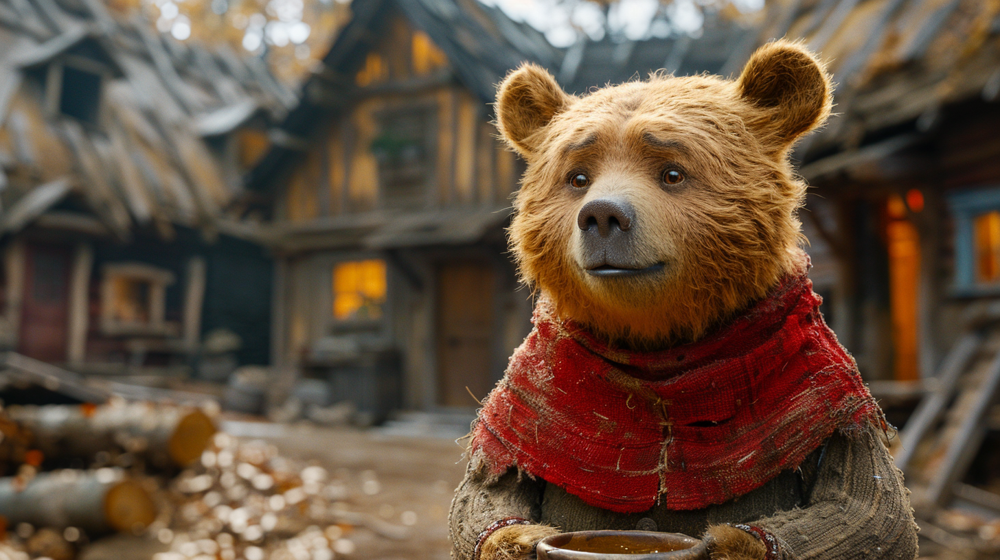
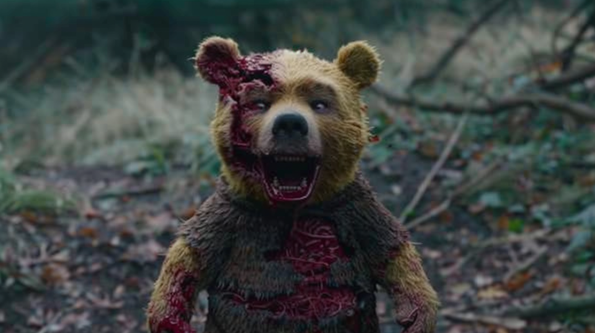
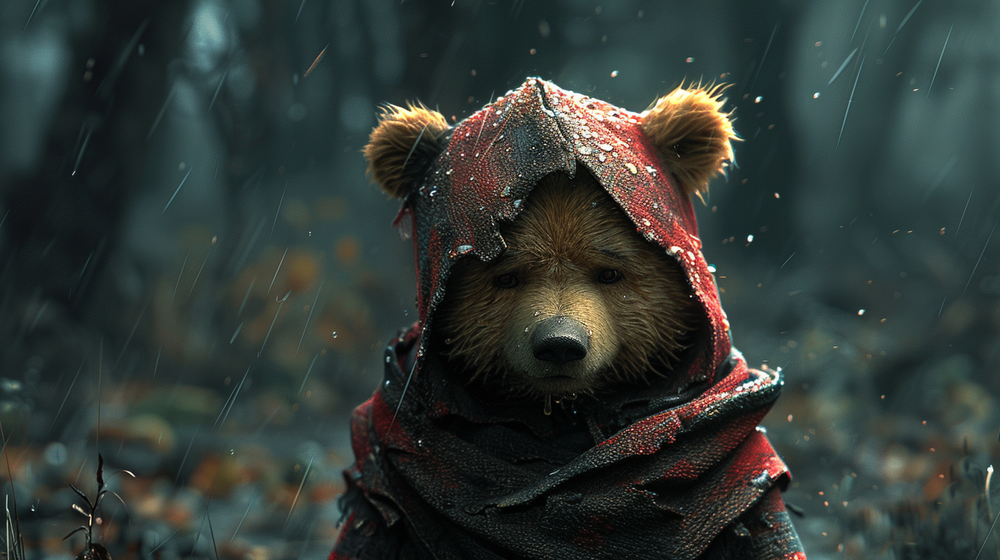
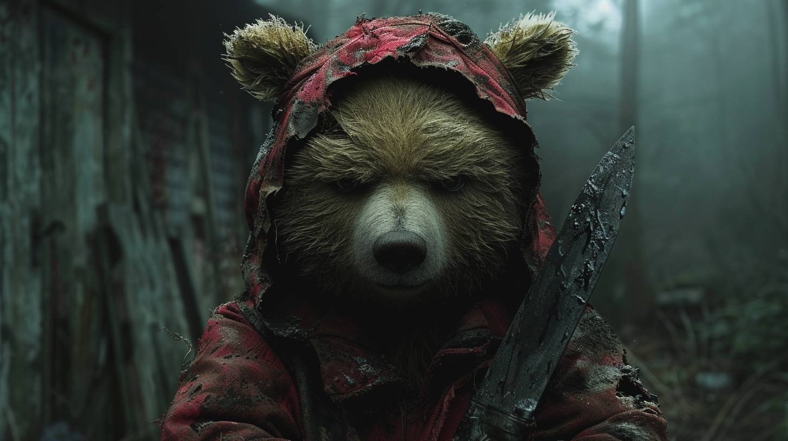
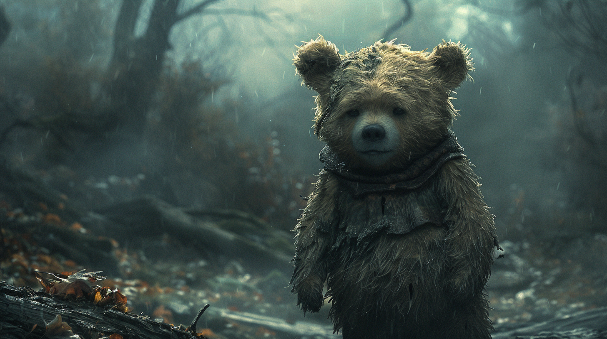
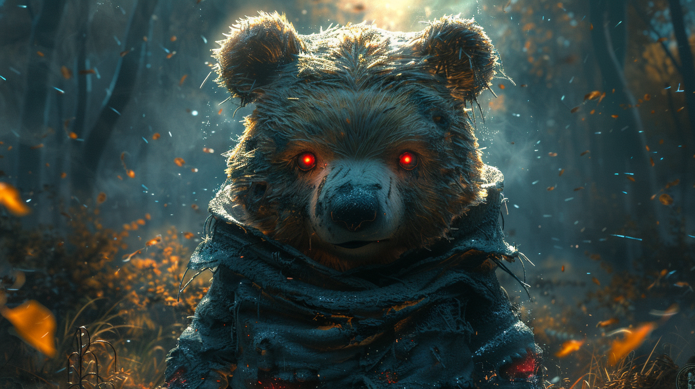
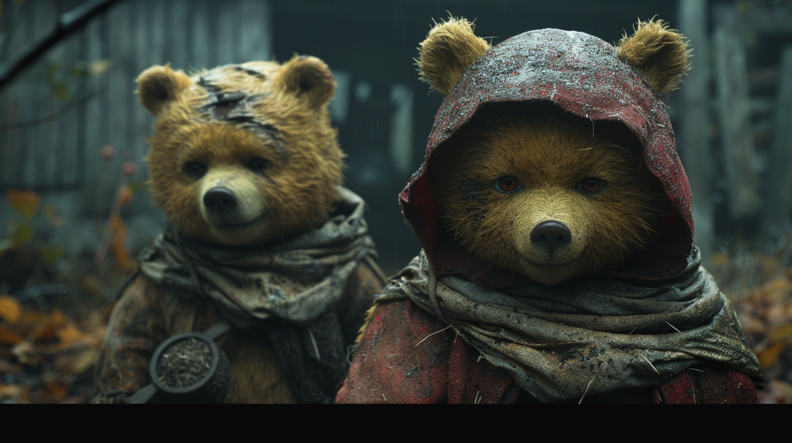
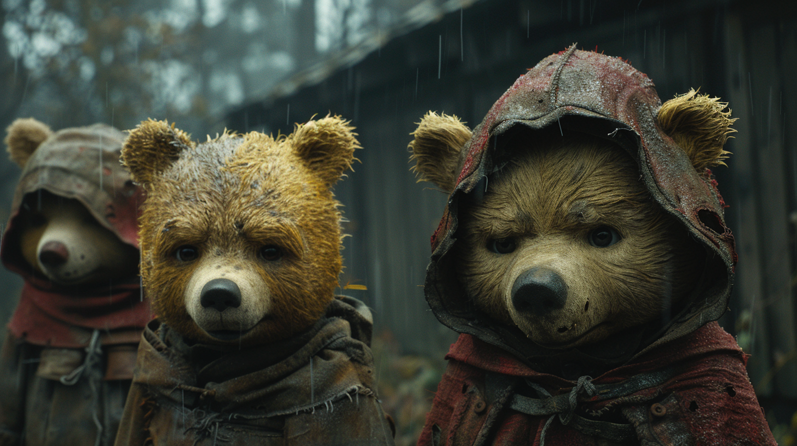
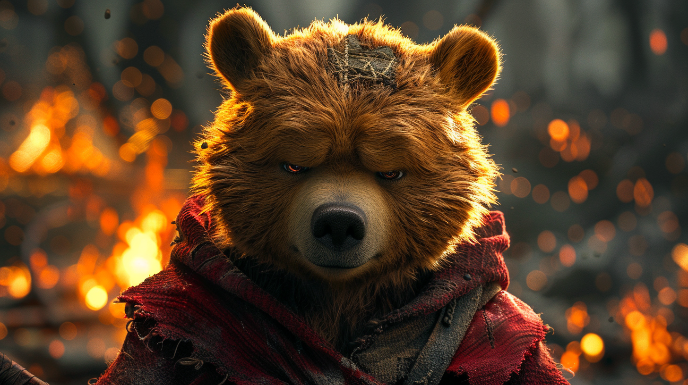

In the shadowed woods of a time once ago, where whispers of magic still lingered in the air, there was a small, secluded abbey known for its honey and the peculiar pooh bears that roamed its grounds. Among them was Friar Pooh, a young bear with a gentle demeanor and a love for the scriptures. But beneath his innocent exterior, Friar Pooh harbored a dark secret.
In the year of our Lord 1133, the Abbey of Melliflua was abuzz with the daily hymns of the pooh bears, their voices harmonizing with the rustling leaves. Friar Pooh, the youngest of the order, was admired for his devotion and the sweetness of the honey he cultivated. Yet, as the moon took reign and the night cloaked the abbey, a transformation befell him.
Under the silver light, Friar Pooh's shadow stretched and twisted, taking the form of a creature as dark as the abyss. It whispered of ancient spells and long-forgotten pacts made in the pursuit of forbidden knowledge. Friar Pooh, entranced by the shadow's promises of power, delved into the eldritch tomes hidden beneath the abbey's library.
The other bears spoke of a change in the air, a chill that settled in their bones. They noticed the once vibrant flowers withering, the bees growing silent, and the honey turning bitter. Unbeknownst to them, Friar Pooh's nocturnal incantations were tearing the veil between worlds, inviting spirits that hungered for more than just honey.
One fateful night, as Friar Pooh chanted from a tome bound in shadows, the ground trembled, and from the depths, a beast of legend arose. Its eyes glowed like embers, and its presence smothered the light of the stars. The abbey was plunged into an eternal night, and the pooh bears were never seen again.
To this day, travelers avoid the ruins of Melliflua, where it is said that the echoes of a young friar's laughter mingle with the howls of an unseen terror. And some say that if you listen closely, you can still hear the sinister whisper of Friar Pooh, forever bound to the creature he unleashed upon the world.
And so, the tale of Friar Pooh serves as a cautionary whisper in the wind, a reminder of the thin line between innocence and the abyss that awaits those who dabble in the shadows.
The fate of the other pooh bears in the Abbey of Melliflua was a tragic one. As Friar Pooh’s dark incantations grew stronger, the fabric of their peaceful reality began to unravel. The once serene abbey became a nexus of eldritch energies, and the pooh bears, innocent and unversed in the ways of magic, found themselves caught in a maelstrom of supernatural forces.
As the beast that Friar Pooh summoned roamed the abbey, its presence alone was enough to corrupt the very essence of life around it. The pooh bears, who had known nothing but the joy of hymns and the sweetness of honey, were transformed. Their once cheerful demeanors were replaced by shadows of fear, their bodies twisted by the malevolent magic that now infused the abbey.
Some say they became wraiths, bound to the beast, their souls tethered to its whims. Others whisper that they fled into the woods, forever changed, their eyes reflecting the darkness that had consumed their home. The forest around Melliflua grew dense and impenetrable, a barrier that kept the outside world from uncovering the truth.
In the end, the pooh bears were lost to legend, their existence a cautionary tale of the dangers that lurk when one meddles with powers beyond their understanding. The Abbey of Melliflua stands as a silent testament to their fate, a place where the boundary between the mundane and the mystical was breached, with consequences too dire to fathom.
And so, the story of Friar Pooh and the pooh bears remains shrouded in mystery, a chilling reminder of the fragile balance between light and darkness.
